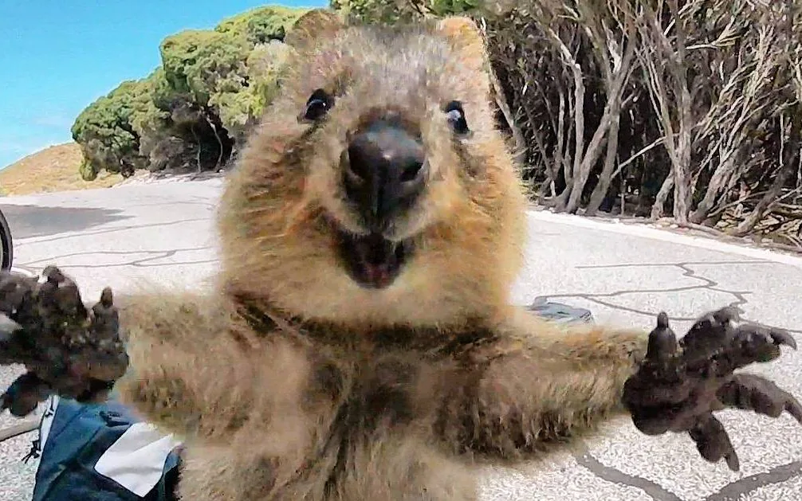

Where They Live

Quokkas are mainly found on Rottnest Island and some other nearby islands in Western Australia. They live in bushland, grasslands, and coastal areas where there is plenty of food and shelter.

The quokka is a small marsupial native to Australia. It is well known for its friendly appearance and often looks like it is smiling. Quokkas usually live on islands and coastal areas, and they are most active at night.
Quokkas are mainly found on Rottnest Island and some other nearby islands in Western Australia. They live in bushland, grasslands, and coastal areas where there is plenty of food and shelter.